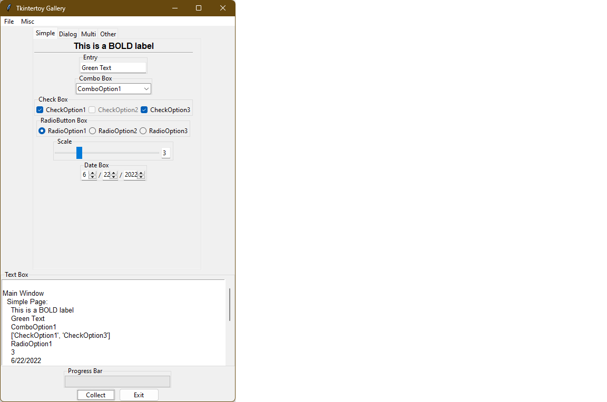
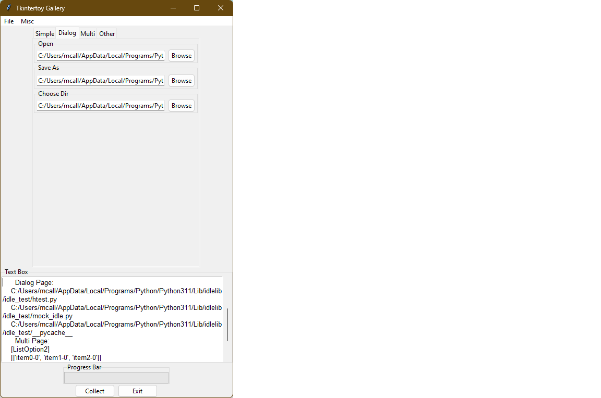
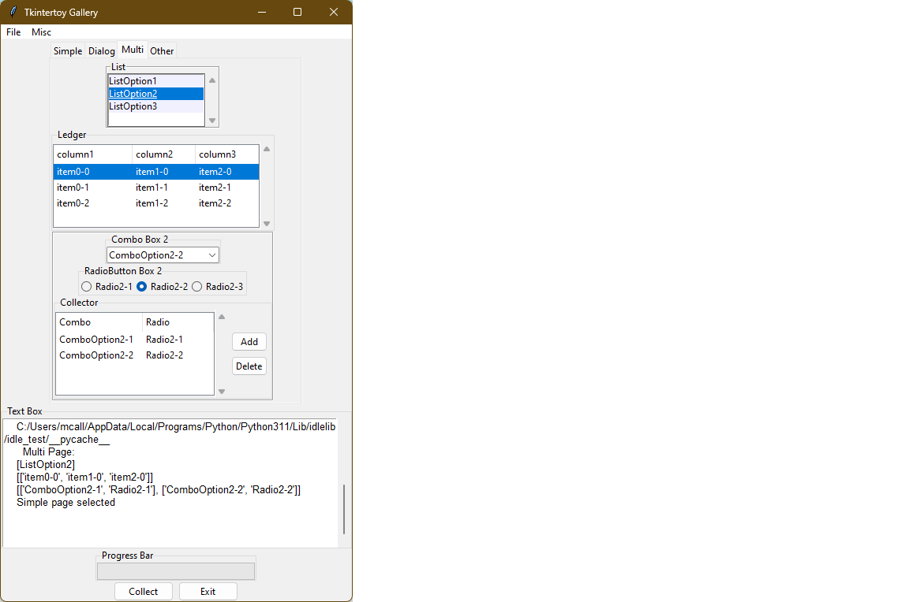
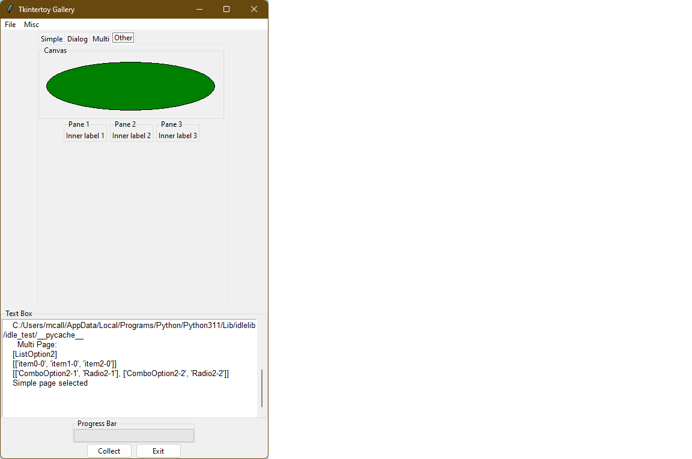
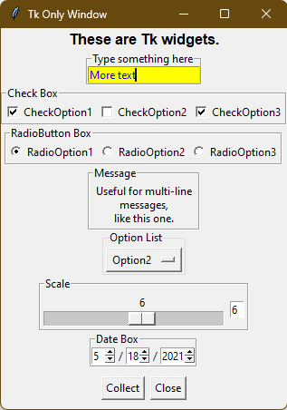

Tkintertoy Gallery
- Date:
Jul 06, 2023
- Author:
Mike Callahan
Introduction
In order to demostrate the capabilities of Tkintertoy, I wrote an sampler-type application that demonstrates how to use most of the widgets in the library, ttgallery. This application is a simple modify and collect program where and user interacts with the widgets and sees their selections in a text widget. It also shows two independent windows, one that uses ttk widgets, the other uses older tk widgets.
A Gallery of ttWidgets
Below is the code followed by an explanation of every line:
1#------------------------------------------------------------------------------- 2# Name: ttgallery.py 3# Purpose: Demostrate use of tkintertoy widgets 4# 5# Author: mike.callahan 6# 7# Created: 7/5/2023 8# Copyright: (c) mike.callahan 2019 - 2023 9# License: MIT 10#------------------------------------------------------------------------------- 11 12from tkintertoy import Window 13 14class Gui: 15 16 def __init__(self): 17 """ Create the windows """ 18 self.gui = Window() 19 self.gui2 = Window(extra=True) 20 self.gui.setTitle('Tkintertoy Gallery') 21 self.gui2.setTitle('Tk Only Window') 22 self.makeGui() 23 24 def makeGui(self): 25 """ Create the main (ttk) window """ 26 # a simple menu 27 mymenu = self.gui.addMenu('ttmainmenu', self.gui.master) # create a main menu 28 fmenul = [['command', {'label':'Open...', 'command':self.popOpen}], # create a file menu 29 ['command', {'label':'Save As...', 'command':self.popSaveAs}], 30 ['command', {'label':'Choose Directory...', 'command':self.popChooseDir}], 31 ['command', {'label':'Exit', 'command':self.gui.cancel}]] 32 mmenul = [['command', {'label':'About', 'command':self.popAbout}], # create a misc menu 33 ['command', {'label':'ChooseColor', 'command':self.popColor}]] 34 fmenuc = self.gui.addMenu('ttfmenu', mymenu, fmenul) # create sub menus 35 mmenuc = self.gui.addMenu('ttmmenu', mymenu, mmenul) 36 mymenu.add('cascade', label='File', menu=fmenuc) # add them to the main menu 37 mymenu.add('cascade', label='Misc', menu=mmenuc) 38 self.gui.master['menu'] = mymenu # connect the main menu to the window 39 # Notebook 40 tabs = ['Simple','Dialog','Multi','Other'] # label the tabs 41 self.pages = self.gui.addNotebook('ttnotebook', tabs) # create the notebook 42 # Text Box 43 self.gui.addText('ttext', 'Text Box', width=60, height=10) # create text area 44 self.gui.plotxy('ttext', 0, 1) 45 # Progress Bar 46 self.gui.addProgress('ttprogress', 'Progress Bar', length=200) # create progrees bar 47 self.gui.plotxy('ttprogress', 0, 2) 48 # Command Buttons 49 cmd = [['Collect',self.collect],['Exit', self.gui.cancel]] # create two buttons 50 self.gui.addButton('ttbutton', '', cmd) 51 self.gui.plotxy('ttbutton', 0, 3) 52 # Notebook Pages 53 self.makeSimple() 54 self.makeDialog() 55 self.makeMulti() 56 self.makeOther() 57 self.gui.plotxy('ttnotebook', 0, 0) 58 self.gui.set('ttnotebook', 'Simple') # select first page 59 self.makeGui2() 60 61 def makeSimple(self): 62 """ Create the page with the most common widgets """ 63 self.simplePage = self.pages[0] 64 # Label 65 self.simplePage.addLabel('ttlabel', '', 'bold', # create a label with an 66 text='This is a BOLD label') # initial text 67 self.simplePage.plotxy('ttlabel', 0, 0) 68 # Line 69 self.simplePage.addLine('ttline') # create a horizontal line 70 self.simplePage.plotxy('ttline', 0, 1, sticky='we') # stretch it horizontally 71 # Entry 72 self.simplePage.addStyle('g.TEntry', foreground='green') # create a green entry 73 self.simplePage.addEntry('ttentry', 'Entry', style='g.TEntry') 74 self.simplePage.set('ttentry', 'Green Text') # add the text 75 self.simplePage.plotxy('ttentry', 0, 3) 76 # Combobox 77 acombo = ['ComboOption1','ComboOption2','ComboOption3'] 78 self.simplePage.addCombo('ttcombo', 'Combo Box', acombo) # create combobox 79 self.simplePage.plotxy('ttcombo', 0, 5) 80 # Checkboxes 81 achecks = ['CheckOption1','CheckOption2','CheckOption3'] 82 self.simplePage.addCheck('ttchecks', 'Check Box', achecks) # create 3 checkboxes 83 self.simplePage.set('ttchecks','checkOption1') # preselect first checkbox 84 self.simplePage.plotxy('ttchecks', 0, 6) 85 self.simplePage.setState('ttchecks', ['disabled'], index=1) # disable CheckOption2 86 # Radio Buttons 87 aradio = ['RadioOption1','RadioOption2','RadioOption3'] 88 self.simplePage.addRadio('ttradio', 'RadioButton Box', aradio) # create 3 radiobuttons 89 self.simplePage.plotxy('ttradio', 0, 7) 90 # Scale 91 self.simplePage.addScale('ttscale', [1,10], 'Scale', width=2, length=200) # create a scale 92 self.simplePage.plotxy('ttscale', 0, 8) 93 # Spinners 94 adate = [[2,1,12],[2,1,31],[4,2000,2099]] 95 self.simplePage.addSpin('ttspin', adate, '/', 'Date Box') # create a date entry box 96 self.simplePage.set('ttspin', '4/21/2023') # set the initial date 97 self.simplePage.plotxy('ttspin', 0, 9) 98 99 def makeDialog(self): 100 """ Create the dialog widget page """ 101 self.dialogPage = self.pages[1] 102 # Open 103 self.dialogPage.addOpen('ttopen', 'Open', width=40) # open dialog 104 self.dialogPage.plotxy('ttopen', 0, 0) 105 # SaveAs 106 self.dialogPage.addSaveAs('ttsaveas', 'Save As', width=40) # save as dialog 107 self.dialogPage.plotxy('ttsaveas', 0, 1) 108 # ChooseDir 109 self.dialogPage.addChooseDir('ttchoosedir', 'Choose Dir', width=40) # choose dir dialog 110 self.dialogPage.plotxy('ttchoosedir', 0, 2) 111 112 def makeMulti(self): 113 """ Create the multi use widget page """ 114 self.multiPage = self.pages[2] 115 # Listbox 116 alist = ['ListOption1','ListOption2','ListOption3'] 117 self.multiPage.addList('ttlist', 'List', alist, height=4, 118 selectmode='multiple') # create list 119 self.multiPage.plotxy('ttlist', 0, 0) 120 # Ledger 121 cols = [['column1',100],['column2',80],['column3',80]] 122 self.multiPage.addLedger('ttledger', cols, 'Ledger', height=4) # create ledger 123 self.multiPage.set('ttledger', [['item0-0','item1-0','item2-0']]) 124 self.multiPage.set('ttledger', [['item0-1','item1-1','item2-1']]) 125 self.multiPage.set('ttledger', [['item0-2','item1-2','item2-2']]) 126 self.multiPage.plotxy('ttledger', 0, 1) 127 # Collector 128 self.subwin = self.multiPage.addFrame('ttframe', '', relief='groove') 129 # -Combobox 130 acombo = ['ComboOption2-1','ComboOption2-2','ComboOption2-3'] 131 self.subwin.addCombo('ttcombo2', 'Combo Box 2', acombo) 132 self.subwin.plotxy('ttcombo2', 0, 0) 133 # -Radio Button 134 aradio = ['Radio2-1','Radio2-2','Radio2-3'] 135 self.subwin.addRadio('ttradio2', 'RadioButton Box 2', aradio) 136 self.subwin.plotxy('ttradio2', 0, 1) 137 # -Collector 138 cols = [['Combo',110],['Radio', 90]] 139 self.subwin.addCollector('ttcollector', cols, ['ttcombo2','ttradio2'], 140 'Collector', height=4) 141 self.subwin.plotxy('ttcollector', 0, 2) 142 self.multiPage.plotxy('ttframe', 0, 2) 143 144 def makeOther(self): 145 """ Create page with the leftover widgets """ 146 self.otherPage = self.pages[3] 147 # Canvas 148 canvas = self.otherPage.addCanvas('ttcanvas', 'Canvas', width=300, 149 height=100) # create canvas 150 canvas.create_oval(10, 10, 290, 90, fill='green') 151 self.otherPage.plotxy('ttcanvas', 0, 0) 152 # Multipane 153 paneTitles = ['Pane 1','Pane 2','Pane 3'] 154 panes = self.otherPage.addPanes('ttpane', paneTitles, orient='horizontal') 155 for i in range(3): 156 # -Label 157 tag = 'ttlabel' + str(i) 158 panes[i].addLabel(tag) 159 panes[i].set(tag, f'Inner label {i+1}') 160 panes[i].plotxy(tag) 161 self.otherPage.plotxy('ttpane', 0, 1) 162 163 def popOpen(self): 164 """ Open dialog """ 165 self.gui.set('ttext', self.gui.popDialog('askopenfilename', 166 title='Open a File')+'\n') 167 168 def popSaveAs(self): 169 """ Save As dialog """ 170 self.gui.set('ttext', self.gui.popDialog('asksaveasfilename', 171 title='Save a File')+'\n') 172 173 def popChooseDir(self): 174 """ Choose Directory dialog """ 175 self.gui.set('ttext', self.gui.popDialog('askdirectory', 176 title='Select a Directory')+'\n') 177 178 def popColor(self): 179 """ Choose Color dialog """ 180 self.gui.set('ttext', str(self.gui.popDialog('askcolor', 181 title='Select a Color'))+'\n') 182 183 def popAbout(self): 184 """ Pop Up an About window """ 185 self.gui.popMessage('Tkintertoy Gallery\nMost of the widgets in Tkintertoy.') 186 187 def makeGui2(self): 188 """ Fill a second independent window using tk widgets only """ 189 # Label 190 self.gui2.addLabel('ttlabel2',usetk=True, text='These are Tk widgets.', 191 effects='bold') 192 # Entry 193 self.gui2.addEntry('ttentry2','Type something here', usetk=True, 194 foreground='blue', background='yellow') 195 # Checkboxes 196 achecks = ['CheckOption1','CheckOption2','CheckOption3'] 197 self.gui2.addCheck('ttchecks2', 'Check Box', achecks, usetk=True) # create 3 checkboxes 198 self.gui2.set('ttchecks2','CheckOption3') # preselect first checkbox 199 # Radio Buttons 200 aradio = ['RadioOption1','RadioOption2','RadioOption3'] 201 self.gui2.addRadio('ttradio3', 'RadioButton Box', aradio, usetk=True) # create 3 radiobuttons 202 self.gui2.set('ttradio3', 'RadioOption2') 203 # Message 204 self.gui2.addMessage('ttmessage', 'Message', justify='center') # create a message 205 self.gui2.set('ttmessage', 'Useful for multi-line messages,\n' 206 'like this one.') # add the text 207 # Option 208 alist = ['Option1','Option2','Option3'] 209 self.gui2.addOption('ttoption', 'Option List', alist) # create an option list 210 self.gui2.set('ttoption', 'Option1') 211 # Scale 212 self.gui2.addScale('ttscale2', [1,10], 'Scale', width=2, usetk=True, 213 orient='horizontal', length=200) # create a scale 214 # Spinners 215 adate = [[2,1,12],[2,1,31],[4,2000,2099]] 216 self.gui2.addSpin('ttspin2', adate, '/', 'Date Box', usetk=True) # create a date entry box 217 self.gui2.set('ttspin2', '3/15/2001') # set the initial date 218 # Buttons 219 cmd = [['Collect',self.collect2],['Close', self.gui2.close]] # create two buttons 220 self.gui2.addButton('ttbutton2', '', cmd, usetk=True) 221 # Plot widgets 222 self.gui2.plotxy('ttlabel2', 0, 0, padx=30) 223 self.gui2.plotxy('ttentry2', 0, 1) 224 self.gui2.plotxy('ttchecks2', 0, 2) 225 self.gui2.plotxy('ttradio3', 0, 3) 226 self.gui2.plotxy('ttmessage', 0, 4) 227 self.gui2.plotxy('ttoption', 0, 5) 228 self.gui2.plotxy('ttscale2', 0, 6) 229 self.gui2.plotxy('ttspin2', 0, 7) 230 self.gui2.plotxy('ttbutton2', 0, 8, pady=10) 231 232 def collect(self): 233 """ Show contents of all widgets on the main (ttk) page """ 234 result = '\nMain Window\n Simple Page:\n ' 235 result += self.simplePage.get('ttlabel') + '\n ' 236 result += self.simplePage.get('ttentry') + '\n ' 237 result += self.simplePage.get('ttcombo') + '\n ' 238 result += str(self.simplePage.get('ttchecks')) + '\n ' 239 result += self.simplePage.get('ttradio') + '\n ' 240 result += str(self.simplePage.get('ttscale')) + '\n ' 241 result += self.simplePage.get('ttspin') + '\n ' 242 self.gui.set('ttprogress', 33) 243 self.gui.set('ttext', result) 244 self.gui.master.after(1000) # wait one sec 245 result = ' Dialog Page:\n ' 246 result += self.dialogPage.get('ttopen') + '\n ' 247 result += self.dialogPage.get('ttsaveas') + '\n ' 248 result += self.dialogPage.get('ttchoosedir') + '\n ' 249 self.gui.set('ttprogress', 66) 250 self.gui.set('ttext', result) 251 self.gui.master.after(1000) # wait one sec 252 result = ' Multi Page:\n ' 253 result += str(self.multiPage.get('ttlist')) + '\n ' 254 result += str(self.multiPage.get('ttledger')) + '\n ' 255 result += str(self.subwin.get('ttcollector', allValues=True)) + '\n ' 256 result += f"{self.gui.get('ttnotebook')} page selected\n" 257 result += '\n\n' 258 self.gui.set('ttprogress', 100) 259 self.gui.set('ttext', result) 260 self.gui.master.after(1000) # wait one sec 261 self.gui.set('ttprogress', 0) 262 263 def collect2(self): 264 """ Collect the infomation from the second window and place in ttext """ 265 result = '\nSecond Window:\n ' 266 result += self.gui2.get('ttlabel2')+'\n ' 267 result += self.gui2.get('ttentry2')+'\n ' 268 result += str(self.gui2.get('ttchecks2'))+'\n ' 269 result += self.gui2.get('ttradio3')+'\n ' 270 result += self.gui2.get('ttmessage') + '\n ' 271 result += self.gui2.get('ttoption') + '\n ' 272 result += str(self.gui2.get('ttscale2'))+'\n ' 273 result += self.gui2.get('ttspin2')+'\n\n' 274 self.gui.set('ttext', result) 275 276def main(): 277 """ main driving function """ 278 app = Gui() 279 try: 280 app.gui.waitforUser() 281 except: # trap all Exceptions 282 errorMessage = app.gui.catchExcept() 283 app.gui.popMessage(errorMessage, 'showwarning', 'Error') 284 app.gui.cancel() 285 286if __name__ == '__main__': 287 main()
Here is an explanation of what each line does:
Documentation of application.
Same.
Same.
Same.
Same.
Same.
Same.
Same
Same.
Same.
Blank line.
Import the
Windowcode which is the foundation of Tkintertoy.Blank line.
Create the
Guiclass. We will use composition style so we are not inheriting from any other class.selfwill be the application.Blank line.
__init__. This method creates the windows, sets the titles, then calls the
makeguimethod.Method documentation.
Create a Window and assign it as an attribute,
gui.Create a second independent Window and assign it as an attribute,
gui2.Set the title of
gui.Set the title of
gui2.Call
makeGuiwhich will fill the windows with widgets.Blank line.
makeGui. This method creates and places all the widgets in the main (ttk) window and then calls
makeGui2.Method documentation.
This is the ttMenu creation section. Menus are good for placing command options in a pulldown structure. These can be quite complex so this is a simple example. Read the Tkinter documentation for more information.
Create a ttMenu as the main menu,
mymenuattached to themasterattribute to the main window,gui. This shows in general how to add a Tkintertoy widget to a window. The first argument is a unique tag for the widget, ‘ttmainmenu’. You will use this tag to work with the widget. In this application all tags start with ‘tt’ but tags can be any string.Create a file menu list,
fmenul, the first option is ‘Open…’ which is connected to thepopOpenmethod…The second option is ‘Save AS…’ which is attached to the
popSaveAsmethod…The third option is ‘Choose Directory’ which is connected to the
popChooseDirmethod…The fourth option is ‘Exit’ whic is attached to the
cancelmethod ofgui. This method is included with all Tkintertoy windows.Create a misc menu list,
mmenul, the first option is ‘About’ which is attached to thepopAboutmethod…The second option is ‘ChooseColor’ which is attached to the
popColormethod.Create the file menu,
fmenuc, attached to the main menu usingfmenul.Create the misc menu,
mmenuc, attached to the main menu usingmmenul.Add
fmenucas a cascade (pulldown) under the ‘File’ label ofmymenu.Add
mmenucas a cascade under the ‘Misc’ label ofmymenu.Add
mymenuto themenuoption of the master attribute ofgui. This will make the ‘File’ and ‘Misc’ labels appear at the top of the window.This is the ttNotebook creation section. Notebooks are a collection of windows, called pages, stacked on top of each other accessed by a tab at the top of the window. It is a good way to save on screen space and hide groups of widgets. Notebooks are a ttk only widget which have no frame.
Create a list of tabs,
tabs.Create a ttNotebook using
tabswith a tag of ‘ttnotebook’. Store the list of pages in thepagesattribute. Each tab will create its own page.This is the ttText section. The text widget includes vertical scrollbars and is an extremely powerful widget with lots of uses. You can think of it as the replacement for the
printfunction in command-line scripts. Text is a tk only widget. Read the Tkinter documentation for more information.Add a ttText widget 60 characters wide by 10 characters high to
gui. The first argument is tag, ‘ttext’. The second argument is the text for the widget frame. Most Tkintertoy widgets have frames (menus and notebooks do not have frames) in which you can change the appearance. Frames are a great place for user prompts. The other arguments are keyword arguments which define the widget. In most cases, we do not need to save the widget in a variable, the tag does this for us.Plot it at column 0, row 1. The notebook will be at 0, 0. This shows how to place a ttWidget in a window. The first argument is the widget tag, the second argument in the column or x position, and the third argument is the row or y position. Following this are keyword arguments that modify the placement of the widgets. Widgets will not appear until they are plotted. Note, in Tkintertoy, widget creation and widget placement are two different method calls. You can plot the widgets immediately after creation like this method, or you can collect all the
plotxycalls at the end of the method as you will see in a later method.This is the ttProgressbar creation section. Progress bars show the user what percentage of time is left elapsed during a long operation. Progress bars are a ttk only widget. We will see how to update a progress bar in the data collection method.
Create a ttProgressbar that is 200 pixels wide with a tag of ‘ttprogress’.
Plot it at column 0, row 2.
This is the ttButtonbox creation section. Buttonboxes are groups of buttons connected to commands. These are the widgets that make actions happen when user click on them.
Create a button list,
cmd, which has two labels (‘Collect’ and ‘Exit’) and the linked methods (collectandcancel).Create a ttButtonbox using
cmd, with a tag of ‘ttbutton’.Plot it at column 0, row 3.
This is the ttNotebook pages creator section. Each page has its own creation method.
Create the first page, ‘Simple’.
Create the second page, ‘Dialog’.
Create the third page, ‘Multi’.
Create the fourth page, ‘Other’.
Plot the notebook at column 0, row 0. Note, we filled the notebook pages before we plotted the notebook.
Set the displayed tab to ‘Simple’.
Create the second window. We will fill this window with ttWidgets that set the keyword option usetk=True so you can see the difference between tk and ttk widgets. In some cases, working with ttk widgets is more complex and the visble difference may not be worth the hassle. A good example of this is the ttEntry widget.
Blank line.
makeSimple. This is the method that fills the first notebook page, ‘Simple’. This page will contain the most commonly used widgets that are easy to implement.
Method documentation.
Create an attribute to store the first page window,
simplePage.This is the ttLabel secton. Labels are a good place to put data or images that don’t change.
Add a ttLabel on the first page with bold text, with a tag of ‘ttlabel’. Note, if you use the text keyword argument, you can specify the contents at creation, you don’t have to use the
setmethod. It does make the method call a bit long, however.Same.
Plot it at column 0, row 0. Notice that the columns and rows of
simplePageare different fromgui.This is the ttLine section. Lines are vertical or horizontal which seperate groups of widgets. This is a ttk only widget which has no frame.
Add a horizontal ttLine to the page, with a tag of ‘’ttline’.
Plot it at column 0, row 1, stetching across the page. If we did not use the sticky=’we’ keyword argument, it would have plotted a single point!
This is the ttEntry section. The entry widget allows the user to type in a response. You can think of it as a replacement from the
inputfunction in command-line scripts.Add a ttStyle for a ttEntry with green text, with a tag of ‘g.TEntry’. The tag must end with ‘.TEntry’ since this is a style for an entry widget. To change he appearance of a ttk.Entry, you must use a style. With tk.Entrys this is not neccessary as you will see in the tk window. However, this style can be used for multiple entries.
Add a ttEntry using the ‘g.TEntry’ style, with a tag of ‘ttentry’. Note, the difference between the tag of the entry and the tag for the style.
Set the entry contents to ‘Green Text’. This string will appear as green because of the style argument.
Plot it at column 0, row 3
This is the ttCombobox section. Comboboxes are a combination of a entry and a list. They are good for giving the user a fixed set of options but allowing them to create their own.
Create a combobox option list,
acombo.Add a ttCombobox using
acombo, with tag a of ‘ttcombo’.Plot it at column 0, row 5.
This is the ttCheckbox section. Checkboxes are a good way of letting the user select multiple independent options.
Create a list of checkbox options,
achecks.Add a ttCheckbox using
achecks, with a tag of ‘ttchecks’.Set the selected option to ‘CheckOption1’. Note that multiple options can be selected at a time.
Plot it at column 0, row 6.
Disable the second option (‘CheckOption2’) from being selected. This demonstrates how to change the state of a widget. To enable, you would set the state to [‘!disabled’].
This is the Radiobox section. Radioboxes are a good way of letting the user select a single option from a group of dependent options.
Create a list of options,
aradio.Add a ttRadiobox using
aradiowith a tag of ‘ttradio’. Note, only a single option can be selected at a time.Plot it at column 0, row 7.
This is the ttScale section. Scales are a good widget for single integer entry if the range is small.
Add a horizontal ttScale that goes between 1 and 10, that has an entry width of 2 characters, a length of 200 pixels, with a tag of ‘ttscale’.
Plot it at column 0, row 8.
This is the ttSpinbox section. Spinboxes are a great way to enter a group of related integers in a particular format like dates, times, ss numbers, etc.
Create a date list for month, date, and year,
adate. The first option is the width, the second the minimum value, and the third the maximum value.Add a ttSpinbox for dates that runs from 1/1/2000 to 12/31/2099, with a tag of ‘ttspin’.
Set the date to 4/21/2023. Note, the
setmethod requires a string with the separators.Plot it at column 0, row 9.
Blank line.
makeDialog. Create the method that fills the ‘Dialog’ page. These widgets use the built-in tk dialog widgets.
Method documentation.
Create an attribute to store the second page window,
dialogPage.This is the ttOpen dialog section. This is how the user can select A file to open.
Add a ttOpen with an entry width of 40 characters with a tag of ‘ttopen’.
Plot it on the ‘Dialog’ page at column 0, row 0.
This is the ttSaveAs dialog section. This is how the user can select a file to save their work. If the filename already exists, a confirming overwrite dialog pops up.
Add a ttSaveAs with an entry width of 40 characters with a tag of ‘ttsaveas’.
Plot it at column 0, row 1.
This is the ttChooseDir dialog section. This allows the user to select a working directory.
Add a ttChooseDir with an entry width of 40 characters with a tag of ‘ttchoosedir’.
Plot it at column 0, row 2.
Blank line.
makeMulti. This is the method that fills the ‘Multi’ page. This page will contain more complex widgets.
Method documentation.
Create an attribute to store the third page window,
multiPage.This is the ttListbox section. While an older tk only widget, listboxes are still very useful. They can be configured to allow a single or multiple option section.
Create a list of listbox options,
alist.Add a ttlistbox that uses
alist, that is 4 characters high, with a tag of ‘ttlist’. Listboxes default to single selection like a radiobox so we are changing this using selectmode=’multiple’.Plot it on the ‘Multi’ page at column 0, row 0.
This is the ttLedger section. Ledger is a new widget based on a a ttk.Treeview. It is good for displaying multicolumn data. it includes a vertical scrollbar. Horizontal scrolling in treeview does not work so if you need horizontal scrolling use a text widget.
Create a list of lists,
cols, that contain the column header and width in pixels.Add a ttLedger, using
cols, with height of 4 characters and a tag of ‘ttledger’.Add a line of data to the Ledger.
Same.
Same.
Plot it at column 0, row 1.
This the ttCollector section. This is a new complex widget combining multiple widgets and a ledger with 2 command buttons, ‘Add’ and ‘Delete’. In this example, we will combine a combobox and a radiobox box. It acts like a dialog inside of a dialog.
We are going to add a ttFrame with a tag of ‘ttframe’, and place all the widgets connected to the collection inside. It will be referenced by an attribute
subframe.This is the ttCombobox section for the collector.
Create a list of combobox options,
acombo.Add a ttCombobox using
acombowith a tag of ‘ttcombo2’. Note, While we reusedacombofor a different list of options, the tag ‘ttcombo2’ is unique. We are doing this to eliminate any confusion in the code when we collect the widgets. However, we could have used the same tag since each window keeps its own dictionary of tags.Plot it at column 0, row 0 in
subframe.This is the ttRadiobox section for the collector.
Create a list of radiobox options,
aradio.Create a ttRadioBox using
aradiowith a tag of ‘ttradio2’.Plot it at column 0, row 1.
This is the ttCollector section. This will connect the above widgets to the collector.
Create a list of lists,
cols, that has the column headers and the width in pixels.Create the ttCollector using
colsand the list of connected widgets tags, that is 4 characters high, with a tag of ‘ttcollector’. Note, the connected widgets must be created before the collector is created.Same.
Plot the collector at column 0, row 2 of
subwin.Plot
subwin(which has a tag ‘ttframe’) at column 0, row 2 ofmultiPage. Note how the arguments ofplotxyare dependent on the current container you are working with and when plotting frames you use the tag.Blank line.
makeOther. This method fills the ‘Other’ page. This page will contain widgets that are not in the first three pages.
Method documentation.
Create an attribute to store the fourth page window,
otherPage.The is the ttCanvas section. Canvas is a powerful tk widget that allows you to create drawings. It has extensive methods which are listed in the Tkinter documentaton. In this example, we are going to draw a simple green oval.
Add a ttCanvas that is 300 pixels wide and 100 pixels high, with a tag of ‘ttcanvas’ and save it under
canvas. Almost alladdWidgetcalls return the ttk or tk widget but most of the time, we don’t need it becasue we reference the widget through the tag. In this case, we are going to store the canvas widget in a local varaible,canvas, since we are going to call a method of the widget. We are using a local variable since we are not going the access this widget outside this method. We could have also accessed the canvas widget usinggetWidget('ttcanvas').Same.
Create a green oval at position (10,10) that is 290 pixels wide and 90 pixels high by calling the
create_ovalmethod ofcanvas.Plot this canvas at column 0, row 0 on
otherPage.This is the ttMultipane section. Multipanes are multiple windows placed overlapping each other that can be re-sized.
Create a list of pane titles,
paneTitles.Add a ttMultipane using
paneTitleswith a tag of ‘ttpane’’. The default orientation is vertical so this is why we are using the orient=’horizontal’ keyword argument. Note, the method will return a list of 3 windows, which we will store inpanes.Set up a loop running from 0 to 2…
This is the ttlabel section of the multipane. We want to place a single label in each pane.
Create a dynamic tag that looks like ‘ttlabeln’, where n is 0-2.
Add a label with the above tag in the correct window.
Set the contents of the label like this: ‘Inner label n’ where n is 1-3.
Plot the label in the column 0, row 0 of the correct window.
Plot the multipane in column 0, row 1, of
otherPage.Blank line.
popOpen. This method pops-up an open dialog. Note,the next 4 methods all call the same method. Only the arguments are different. These are the methods that the menu options are connected to.
Method documentation.
Pop-up an open dialog. Display the user’s entry ‘ttext’.
Same.
Blank line.
popSaveAs. This method pops-up a save as dialog.
Method documentation.
Pop-up a save as dialog. Display the user’s entry in ‘ttext’.
Same.
Blank line.
popChooseDir. This method pops-up a choose directory dialog.
Method documentation.
Pop-up a choose directory dialog. Display the user’s entry in ‘ttext’.
Same.
Blank line.
popColor. This method pops-up a choose color dialog.
Method documentation.
Pop-up a choose color dialog. Display the user’s entry in ‘ttext’.
Same.
Blank line.
popAbout. This method pops-up an about window. This is where you put information about your application.
Method documentation.
Pop-up a message window. Note, you don’t use a tag or store anything
Blank line.
makeGui2. This method fills in the second window with tk versions of ttWidgets. This way you can see the difference between the two type of widgets
Method documentation.
This is the ttLabel section.
Add a ttLabel to
gui2with the keyword argument usetk=True and a tag of ‘ttlabel2. This will use tk widgets instead of ttk widgets. You will see this argument repeated for every widget ingui2. The number of keyword arguments is greater with tk widgets since some of those options were sent to the style method in the ttk version. Read the Tkinter documentation for more information. Note, tk widgets are in the front of the documentation and not all tk widgets have ttk versions.Same.
This is the ttEntry section.
Add a ttEntry to
gui2with of ‘ttentry2’. Note, you can specify the foreground and background colors as keyword arguments so styles are not required to change default colors.Same.
This is the ttCheckbox section.
Create a list of checkbox options,
achecks.Add a group of checkboxes using
acheckswith a tag of ‘ttchecks2’.Preselect the third option.
This is the ttRadiobox section.
Create a list of radiobox options,
aradio.Add a ttRadiobox to
gui2with a tag of ‘ttradio3’.Preselect the second option.
This is the ttMessage section. This is a tk only widget good for displaying multiple lines of text.
Add a ttMessage widget center justified with a tag of ‘ttmessage’.
Set the message content.
Same.
This is the option list section. This is an older tk only widget, similar to a combox without the entry widget.
Create a list of options,
alist.Add a ttOptionlist using
alistwith a tag of ‘ttoption’.Set the selected option to ‘Option1’. Note, like a radiobox, only a single option can be selected at a time.
This is the ttScale section.
Add a horizontal ttScale that goes between 1 and 10, that has an entry width of 2 characters and a length of 200 pixels and a tag of ‘ttscale2’.
Same.
This is the ttSpinbox section.
Create a date list for month, date, and year,
adate. The first value is the width in characters, the second is the minimum value, and the third is the maximum value.Add a ttSpinbox for dates that runs from 1/1/2000 to 12/31/2099 with a tag of ‘ttspin2’.
Set the date to 3/15/2021
This is the ttButtonbox creation section.
Create a button list,
cmd, which has two labels (‘Collect’ and ‘Close’) and the linked methods (collect2andclose). Unlikecancel,closewill close the window but the apllication will contune to run.Create a ttButtonbox using
cmdwith a tag of ‘ttbutton2’.This is the widget plotting section. In
makeGuiwe plotted the widgets as soon as we created them. Here we are going the plot all the widgets at the end of the method. Some programmers like this technique because they can experiment with the placement of widgets easier.Plot ‘ttlabel2’ at column 0, row 0.
Plot ‘ttentry2’ at column 0, row 1.
PLot ‘ttchecks2’ at column 0, row 2.
PLot ‘ttradio3’ at column 0, row 3.
PLot ‘ttmessage’ at column 0, row 4.
Plot ‘ttoption’ at column 0, row 5.
Plot ‘ttscale2’ at column 0, row 6.
Plot ‘ttspin2’ at column 0, row 7.
Plot ‘ttbutton2’ at column 0, row 8, with a 10 pixel vertical spacing.
Blank line.
collect. This method collects all the contents of the
guiwindow. To get the contents of any widget, you call thegetmethod on the window with the tag as the argument. You don’t have to worry about the type of widget,gethandles this automatically.Method documentation.
Build a string that will contain the widget contents,
result. The header will indication that these are widgets fromsimplePage.Get the contents of ‘ttlabel’ and add to
result.Get the contents of ‘ttentry’ and add to
result.Get the contents of ‘ttcombo’ and add to
result.Get the contents of ‘ttchecks’ and add to
result. Note, since checkboxes can have multiple values,getreturns a list, so we must convert it to a string.Get the contents of ‘ttradio’ and add to
result.Get the contents of ‘ttscale’ and add to
result. Note, sincegetreturns a int we must convert it to a string.Get the contents of ‘ttspin’ and add to
result.We have collected about a third of the widgets so lets move the ‘’ttprogress’ to the 33% position. To change the contents of any widget you use the
setmethod on the window with the tag as the first argument and the value as the second argument. Again, you don’t have to worry about the type of widget,sethandles this automatically.Update ‘ttext’ with
result.Wait one second so the user can see the ‘ttprogress’ change. The
aftermethod of the master attribute has a number of very important uses. Read the Tkinter documentation for more information.Create a new
resultfordialogPage.Get the contents of ‘ttopen’ and add to
result.Get the contents of ‘ttsaveas’ and add to
result.Get the contents of ‘ttchoosedir’ and add to
result.We have collected about two-thirds of the widgets so lets move the ‘’ttprogress’ to the 66% position.
Update ‘ttext’ with
result.Wait one second so the user can see the ‘ttprogress’ change.
Create a new
resultformultiPage.Get the contents of ‘ttlist’ and add to
result. Note, since listboxes can have multiple values,getreturns a list, so we must convert it to a string.Get the contents of ‘ttledger’ and add to
result. Note, since ledgers can have multiple values,getreturns a list, so we must convert it to a string.Get the contents of ‘ttcollector’ and add to
result. Collector can be a single or multi value widget. We want a multi-value so the keyword argument is allValues=True, Note, sincegetreturns a list, so we must convert it to a string.Get the displayed page from ‘ttnotebook’ and add to
result.Complete
result.We have collected all of the widgets so lets move the ‘’ttprogress’ to the 100% position.
Update ‘ttext’ with
result.Wait one second so the user can see the ‘ttprogress’ change.
Result ‘ttprogess’ back to 0%.
Blank line.
collect2. This method collects all the contents of the
gui2window.Method documentation.
Build a string that will contain the widget contents,
result. The header will indication that these are widgets fromgui2.Get the contents of ‘ttlabel2’ and add to
result.Get the contents of ‘ttentry2’ and add to
result.Get the contents of ‘ttchecks2’ and add to
result. Note, since checkboxes can have multiple values,getreturns a list, so we must convert it to a string.Get the contents of ‘ttradio3’ and add to
result.Get the contents of ‘ttmessage’ and add to
result.Get the contents of ‘ttoption’ and add to
result.Get the contents of ‘ttscale2’ and add to
result. Note, sincegetreturns a int we must convert it to a string.Get the contents of ‘ttspin2’ and add to
result.Update ‘ttext’ with
result.
Blank line.
main. Common Python. This is the main driving functon.
Function documentation.
Create an instance of Gui,
app. Note, that this will build all the windows.Begin a try block. This part of the application could crash and we want to capture any error messages.
Start the application loop and wait for the user to press a command button. This will continue to run until the user clicks on ‘Exit’.
If an error occurs…
Catch the error message in
errorMessage. ThecatchExceptmethod is included in all Tkintertoy windows.Pop-up an message box containing
errorMessage.After the user click on ‘Ok’ in the message box, exit the program.
Blank line.
Standard Python. If you are not importing, excute
main.Same.
By looking at this code, the novice programmer should be able to use most of the Tkintertoy widgets for their own application. Be sure to also see the code examples in the tutorial for more information.
A Collection of Screenshots
Here are screen shots of the resulting GUI, the Simple page:

The Dialog page:

The Multi page:

The Other page:

The second (tk) window:
